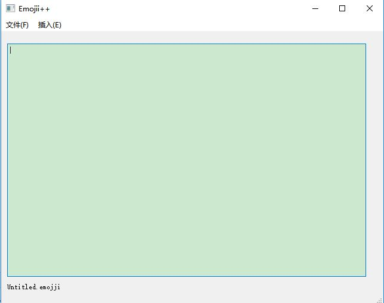
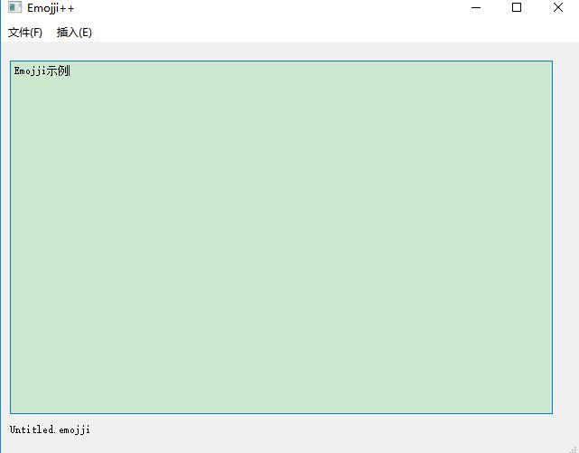
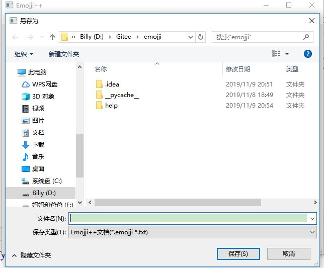
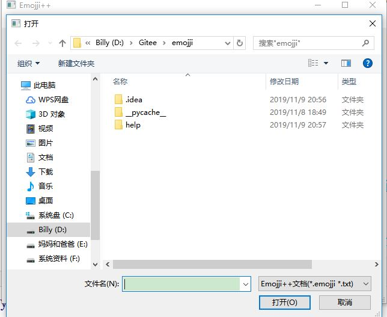
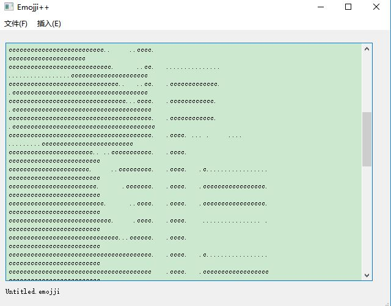

Emoji++是一款轻量级颜文字&文本画创作平台。适用于 信息技术课程、计算机社团等。
启动界面如下所示：
可以选择 文件(F)-新建(N) 新建一个文档。
接着可以在大的多行文本框里写内容。
写完后可以文件(F)-保存(S)保存一个文件，也可以用文件(F)-另存为……(A) 多次保存一个文件,需要在文件对话框中选择路径。
注意：默认为*.emoji格式，可以改成*.txt或其他格式
下次打开时可以选择文件(F)-打开(O)打开
可以选择文件(F)-打开来自图片(I)
使用后如下所示
